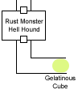
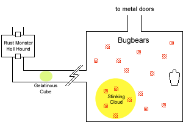
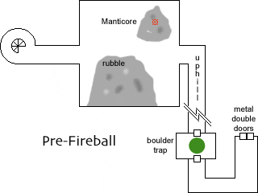
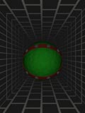

Chapter 4: One Manticore, Medium Well
sing the moment's respite wisely, Seremak cast Fortify Familiar on Rai (his canine companion). Seremak kicked the door off its hinges and Rai charged through, biting the Rust Monster's neck. Kaerick and Chaden peppered it with arrows until the creature expired. Meanwhile the Hell Hound, sensing the opportunity of a lifetime, breathed a Cone of Fire down the hallway to engulf all of the adventurers. Our heroes had not counted on the monsters use of tactics. Seremak, Hasted by Edwin, hit it three times in rapid succession, and the Hell Hound dropped.
The adventurers noticed that when Seremak had stepped on each of the first two squares in the room a monster had been summoned, but that when he stepped back onto the first square no new foe had appeared. Determined to bypass unnecessary whoop-ass, Edwin cast Fly and Tenser's Floating Disk to ferry everyone across without stepping on any new squares. Chaden felt the need to straighten the door which Seremak had kicked in, aligning it with the walls of the room.
 It took three trips to ferry everyone to the door on the far side, Grapthar being a full load all by himself. As soon as they landed something strange was noted in the hallway ahead. It looked like a thin fog rolling in, but there were bits of bone and detrius suspended in the air. Chaden identified it as a Gelatinous Cube, which thrive in dungeon environments where there is plentiful carrion to sweep up. Seremak cast Flame Shield on himself and on his familiar. Rai ran forward to bite the cube, inflicting a great deal of fire damage but being burned by the creatures acid in turn. Then the cube suddenly lurched ten feet forward, nearly engulfing Rai and threatening the rest of the party. It struck at Chaden with a pseudopod, missing. Chaden hit it with an Orb of Fire and Edwin incinerated a sizeable fraction of it with twin Scorching Rays, but it kept on coming.
Were the monster to lurch forward again it would engulf the entire party. Seremak and Grapthar rushed into the fray, carving off chunks of it until it stopped moving. The dismembered pieces continued to quiver for quite some time. Chaden felt the need to neatly stack the slabs of sliced jello, and asked Katriana to cast Create Water to clean the acid off of everything.
The gelatinous cube had swept up a number of items not yet dissolved by its corrosive digestion:
- a gold tooth (which radiates Transmutation magic)
- a rusty piton
- a fork, though the wooden handle has dissolved away
- a metal gauntlet, albeit missing the middle finger.
Having fought several battles, the party decided to rest and recuperate. Kaerick took the time to identify the items previously recovered. The Crystal Ball is just that: a crystal ball which can cast Scry once per day. An Identify spell on the wand had not been able to determine anything other than a faint enchantment, but Bardic lore proved more fruitful:
The wand is that of the ancient warrior-king Siryl of Greyhawk. It was given him by the wizard Mitcou, who made it. Siryl used the wand to heal himself in battle. Kaerick also recalled a different reference, that Mitcou had fashioned the wand from a relic of the Vaati.
After handling the wand for a few minutes Kaerick suddenly realized she was filthy and began to carefully groom herself. Similarly Chaden, who had been carrying the wand to that point, realized her compulsive desire to primp and to arrange objects had faded. Obviously the wand is the source of these compulsions.
A long time ago in this very dungeon
| Galap-Dreidel: |
So you as you can plainly see, this is really quite a good deal for you and your tribe. |
| Bugbear chieftan: |
Ummm, could you go over again? |
| Galap-Dreidel: |
Of course. As we have negotiated, my magic will see to it that all of your enemies turn instantaneously to dust (from your perspective). You will enjoy a dramatically increased lifespan. You will be paid at a rate of fifty thousandths of a point of interest, compounded centenially. |
| Bugbear chieftan: |
Ummm, is that lots? |
| Galap-Dreidel: |
Yes, of course it is. Fifty thousand is a very large number. |
| Bugbear chieftan: |
Ummm, ok. We do it. |
| Galap-Dreidel: |
Good. Move a little to the right. Good. Now, I'll activate the Temporal Stasis. |
| Bugbear chieftan: |
Ummm, the wha- |
The Narrator

The party broke camp and proceeded down the hall, which eventually opened into a square room ninety feet on a side. On the far side of the room was a stone sarcophagus, approximately ten feet long by five feet wide and five feet high and carved with lettering on all sides. The writing could not be read from the doorway. Scattered through the room were 16 incredibly lifelike painted statues of bugbears, all with weapons at their sides and holding javelins.
Believing that the bugbears would come to life whenever someone stepped into the room, the adventurers began preparing spells. Edwin Hasted everyone and placed a Stinking Cloud to envelop a third of the foes. Chaden cast True Strike, Seremak Bull's Strength, Katriana Call Lightning, and Kaerick began to sing Inspiring Ways. Edwin stepped boldy into the room, noting that two bugbears unfroze and swiveled to face him. He also heard retching sounds from within the Stinking Cloud, where two more bugbears had come to life. Each time a new person stepped into the room another four bugbears would animate.
The battle commenced. Kaerick fired an arrow at one of the still-suspended bugbears, which bounced off but awoke the bugbear. Rai rushed out to bite the closest bugbear, dodging javelins from the four which animated at his entrance. Edwin fired a Scorching Ray at the bugbear Kaerick had targeted, incinerating it. Katriana turned a second bugbear into a charcoal briquet with Call Lightning. Chaden and Kaerick peppered several more foes with arrows. Seremak charged in (rousing another four bugbears), immediately dropping one and taking several javelin hits in return. A javelin knocked Edwin's hat off his head, punching a hole in the material. Edwin responded with Magic Missiles, nearly dropping the thrower (he finished it off the next round with another Magic Missile). Rai killed a second opponent, as did Seremak though he took another javelin hit. A javelin bounced off the wall next to Katriana, who responded with Call Lightning. Chaden continued firing arrows, dropping another foe. The two goblinoids closest to the entrance drew their melee weapons and rushed Edwin, yet amazingly missed every attack. Kaerick felled one of the two with arrows, while Grapthar nonchalantly caved in the head of the other. Grapthar's entrance awoke the remaining bugbears.
Rai squared off with the chieftain, who was considerably tougher than his minions. Rai took several hits, but eventually ripped out his opponents throat. Seremak, using his Hasted speed, was able to Spring Attack three bugbears. One dropped, the other two were wounded. Edwin finished off one with a Magic Missile, while Katriana further wounded the other with Call Lightning. Kaerick finally finished it off with an arrow. Chaden and one of the few remaining bugbears exchanged missile attacks, with the bugbear getting the worst of it. Seremak and Rai finished off the final two opponents.
The party turned their attention to the sarcophagus. Kaerick was able to translate the writing, which said in typically Gygaxian fashion: "Beware the death which will someday end," (i.e. a warning delivered too late to be of any real use). In addition to the third segment of the key and gems worth a total of about 800 gp, the sarcophagus contained 2000 silver and 6000 copper pieces which Kaerick felt compelled to count and neatly stack into piles. The silver and a thousand of the copper coins were arranged (neatly) into a large sack which Edwin Shrunk.
To the north a passageway led around to the right, left, and right until it unsurprisingly ended in yet another set of double metal doors. The chalk mark Chaden made in the previous tower was nowhere to be seen. Just to be certain, Edwin cast Arcane Mark on this new set of doors.
A long time ago in this very dungeon
| Galap-Dreidel: |
So you as you can plainly see, this is really quite a good deal for you. |
| Manticore: |
I do not agree with that assessment. The contract period is unbounded, the vesting schedule is pathetic, and subsequent investment rounds that happen while I am in stasis would dilute my share to practically nothing. |
| Galap-Dreidel: |
I see. You're much smarter than the bugbears. |
| Manticore: |
I have an Intelligence of 12. |
| Galap-Dreidel: |
Of course. Fortunately for me, Will saves are based on Wisdom. Dominate Monster! |
The Narrator
From the metal doors the party retraced their steps. Edwin again cast Fly and Tenser's Floating Disk to cross the monster summoning room. The party returned to the surface and walked straight across the courtyard to the fourth and final tower, descending once again into the darkness. The group first came to a partially collapsed square room, fifty feet on a side with a twenty foot ceiling. Two piles of rubble, each approximately eight feet high, made passage difficult but not impossible.

As the adventurers entered a strange creature lept up onto the far pile. It had the head of a humanoid, the body of a lion, bat-like wings, and a long spiked tail. Katriana identified it as a Manticore, which immediately flung a full spread of spikes from its tail. Everyone save Rai was hit, and Edwin was additionally affected by the poison coating the Manticore's spikes.
Combat was joined. Grapthar threw his handaxe, which struck true and returned to his hand to be thrown a second time. Kaerick attempted to Fascinate the creature with Bardic magic, but it shrugged off the effect. Seremak, apparently weary of being denied his most effective spells, cast Fireball. The Manticore dodged the worst effects of the fire, but the resulting collapse of the cavern roof caused the creature grievous harm and partially buried it. Edwin cast Magic Missile and Chaden Orb of Electricity. Rai rushed up to attack just as the Manticore freed itself. Rai was badly mauled by the creatures claws, dropping to -6 hp. Edwin hit with Magic Missiles and Grapthar hurled his axe again, but it was Seremak who charged up the rubble to strike a critical hit, felling the Manticore.
Katriana stabilized and healed Rai before he dropped any lower. Edwin continued taking damage from the Manticore venom until he drank his Potion of Neutralize Poison.

The party had to clear fallen rubble from the doorway before continuing on into a hallway which led uphill at a slight angle. Just before reaching the far end a huge boulder burst through the wall! Fully nine feet in diameter, the boulder began to pick up speed as it rolled down the ten foot wide hall. Edwin cast Dimension Door to safety, taking Kaerick and Chaden with him. Katriana wildshaped into an eagle to fly above the boulder, her companion viper gently grasped in her talons. Seremak cast Spider Climb (which also affected his familiar), to cling to the ceiling as the boulder rolled beneath. This left only poor Grapthar, who turned and ran back down the hall as fast as his stubby dwarven legs would carry him. Unfortunately for him the boulder was faster; Grapthar was crushed to pulp. The boulder smashed its way through the wall at the end of the hall and seemed to drop out of sight.
Katriana and Chaden went to Grapthar's side, when suddenly another boulder appeared at the top of the ramp. Grapthar, suddenly shaking off the effects, stood up and said, "Uh, I think its just an illusion."
 Beyond the illusionary boulder the hallway turned left three times before ending in another set of the metal double doors. Neither Chaden's chalk mark nor Edwin's Arcane Mark was present, confirming that there were indeed multiple sets of identical doors beneath each tower. However the party possessed only three out of the four required keys. Returning to the collapsed room, Edwin's Locate Object spell pinpointed where to dig. In addition to the fourth segment of the key the Manticore's treasure consisted of:
Beyond the illusionary boulder the hallway turned left three times before ending in another set of the metal double doors. Neither Chaden's chalk mark nor Edwin's Arcane Mark was present, confirming that there were indeed multiple sets of identical doors beneath each tower. However the party possessed only three out of the four required keys. Returning to the collapsed room, Edwin's Locate Object spell pinpointed where to dig. In addition to the fourth segment of the key the Manticore's treasure consisted of:
- a suit of chainmail +1
- a scroll of Rope Trick
- potion of Flying
- potion of Water Breathing
Prev: A Game of Kings |
Entrance |
Next: Jurassic Party
Postscript: notes for next game
There are two sentences in Kaerick's recollections of the history of the Ghost Gem which seem relevant at this point:
Stories say that the light of the gem ripped the life from the bodies of men and disintegrated their flesh to dust.They also say that he who controlled the gem could call forth numerous denizens to do his bidding.
"Ripping the life from the bodies of men" sounds like a Will save to this humble Chronicler; appropriate buffs would be in order. Crumbling to dust sounds like a Disintigrate effect; a Wall of Stone to take cover behind could be useful. Summoned denizens implies there will be a portable horde to fight. Fortunately as the central tower appears to be extradimensional it should not suffer from the same structural weakness as the rest of the dungeon: Fireball early, Fireball often.